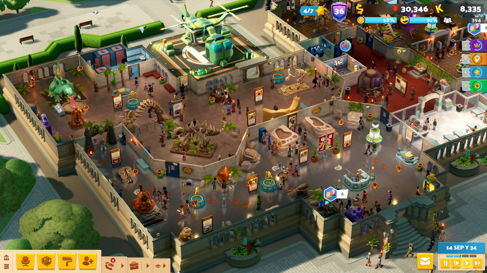
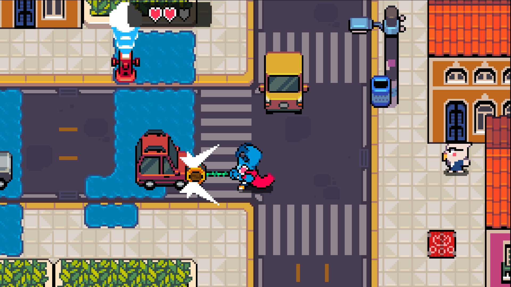

Back...
2025 Game of the Year
Another year dominated by small indie games for me. I love seeing the innovation and personality of modern indie games, and even better that they often take <5 hours to complete.
Tangent: AI (of the "slop" variety) feels like the logical conclusion of something that the AAA games industry pursued aggressively through the 2010s: content, loads of it, at whatever quality was needed to sustain that quantity. Games like The Witcher came out and put pressure on companies like BioWare to produce games of the same length, lest they disappoint fans with a weaker value proposition. Ubisoft built multiple franchises on the premise of "build an interesting world, then cram it with 80 hours of fetch quests".
I get it - I too once wanted to get sucked into a role-playing game and not come up for air until I'd invested 2 work weeks of unpaid effort into it. Now I'm older and already have a job, so grinding at another one (even if in a fantasy world) is less appealing. The industry has also grown significantly, so there are options in every genre besides "replay this one game for 5 years until the next installment comes out".
I'm starting to see folks ask: might consumers not prefer quality after all? Live service games like Fortnite, Minecraft, and Roblox have already captured the audience of "kids with limited spending power and too much time on their hands", so could the path forward for everyone else be a return to more modestly-scoped and curated experiences? And will publishers and investors be willing to fund projects that turn a profit, but not a "live service with millions of daily active users" profit?
Until then, I'm pleased that independent creators are putting out so many fantastic games. I played very few of the year's big games (Clair Obscur: Expedition 33, while artistically impressive, left me cold with its twitchy combat system; Doom: The Dark Ages just made me want to play 2016's Doom again; and the price of Nintendo's Switch 2 console ensures that it'll be years before I play any of the hits on that system) but thoroughly enjoyed almost every small indie game I tried.
Which leads me to my pick for a "Game of the Year" for 2025...
.
.
.
.
The Roottrees Are Dead
I have to hand it to this game for combining addictive gameplay (who doesn't like solving a mystery?) with a strong sense of time and place (the 90s internet). Similar to games like Return of the Obra Dinn, this deduction game tasks you with reassembling a complex family tree - but you're doing it using 90s-era online search tools. (At last! All those hours I spent online in 1997 weren't wasted after all.) If, like me, you came of age on the internet in the 90s, you'll enjoy the nostalgia trip through early web design and the opportunity to test your web sleuthing skills.
Plus, I love games that take advantage of the medium to tell stories in a unique way. There's something special about slowly piecing a story together through random snippets of websites and news articles. You'd have a hard time reproducing that experience so elegantly in another medium.
And two runner-ups that could have easily taken the crown if The Roottrees Are Dead hadn't tickled my nostalgia so much:
Two Point Museum
This should be #1 for the sheer number of hours I've sunk into it. I haven't gotten sucked into a sim game in a while, but this one got me. Building on the formula established in previous Two Point games, this game shifts the focus more onto crowd and exhibit management as you balance sending out expeditions to collect new exhibits with visitor needs inside the museum. Moreso than previous games, I enjoyed planning the layout of my museum and "rearranging the furniture" each time a new exhibit came in.
If you've ever enjoyed similar games, and especially Two Point Hospital or Two Point Campus, definitely check it out.

Pipistrello and the Cursed Yoyo
My biggest surprise of the year because I'm not generally a fan of Zelda-like games and have no particular nostalgia for the GBA-era aesthetic present here, but I loved this game. It has a ton of personality and I really enjoyed the combination of 2D 'beat 'em up' combat and room-by-room puzzling. The yoyo, with its ability to bend around corners, turn into a ranged weapon, or carry objects across the map, is an interesting mechanic and gives the game a metroidvania flavour, as your new yoyo skills change your ability to traverse the map.

And finally, a retrospective award (a.k.a. a pre-2025 game that I first played in 2025):
Minishoot' Adventures (2024)
2D shoot 'em up meets Zelda exploration. (...wait, have I liked Zelda-like games all along?) One of the few games where I got to the end and started a new run right away. I loved the simple but solid gameplay loop, and the difficulty felt challenging but attainable for someone not experienced in bullet hell games.

Lightning round:
- Keep Driving
Road trip simulator with a killer soundtrack and fun emergent stories. (My first run was torpedoed by a hitchhiker who stole all my money.)
- Tiny Bookshop
If you love reading and fantasize about a life spent giving people book recommendations, look no further.
- Road to Empress
FMV visual novel game where you really don't want to make the wrong choices. I've never watched any Chinese historical dramas so that was a novelty in itself, and the merciless story gets darkly comedic as even the most innocuous dialogue choices somehow end in your violent death.
- Consume Me
Autobiographical game that does a great job conveying the pressure and stress of being a high school/college student trying to do too much.
- Is This Seat Taken?
Cute puzzler with a unique concept: figure out how to seat picky people in buses, auditoriums, and parks. Jim won't sit next to a window and Pam wants to sit alone and Bob is playing loud music and Sarah hates loud music - can you find an arrangement that keeps them all happy?
- Dawnfolk
2D pixelated city builder/puzzler. The art is charming and the levels are short and goal-oriented (you won't be spending 2 hours micromanaging a city).
- Squeakross: Home Squeak Home
A rat-themed Picross game. It's not doing anything new, but it's cute and well-made and has a lot of puzzles: the perfect game to load on your Switch for bedtime or commuting.
The full list:
Bold = completed / played at least 10 hours (for games without a linear narrative)
2025:
- Citizen Sleeper 2
- Avowed
- Two Point Museum
- Blue Prince
- Clair Obscur: Expedition 33
- Doom: The Dark Ages
- Keep Driving
- Spilled
- The Roottrees Are Dead
- The Alters
- Tower Wizard
- Faceminer
- Many Nights a Whisper
- Maze Mice
- River Towns
- Tiny Bookshop
- Is This Seat Taken?
- Drop Duchy
- Wanderstop
- Despelote
- Look Outside
- Dogwalk
- Pipistrello and the Cursed Yoyo
- Squeakross: Home Squeak Home
- Dawnfolk
- Starvaders
- Road to Empress
- Consume Me
- Hades II
Older:
- Rock Band 4
- Fuser
- Urbo (2023)
- Fortnite (particularly the excellent Simpsons season)
- Chronotrigger
- Regency Solitaire
- Doom (2016)
- Steamworld Dig
- Été (2024)
- Minishoot Adventures (2024)
- Overcooked 1 & 2
- Abathor (2024)
- Steamworld Dig 2
- Balatro (2024)
- Ori and the Will of the Wisps
- Hogwarts Legacy (2023)
Posted: January 2026